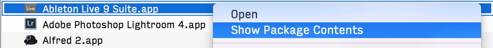
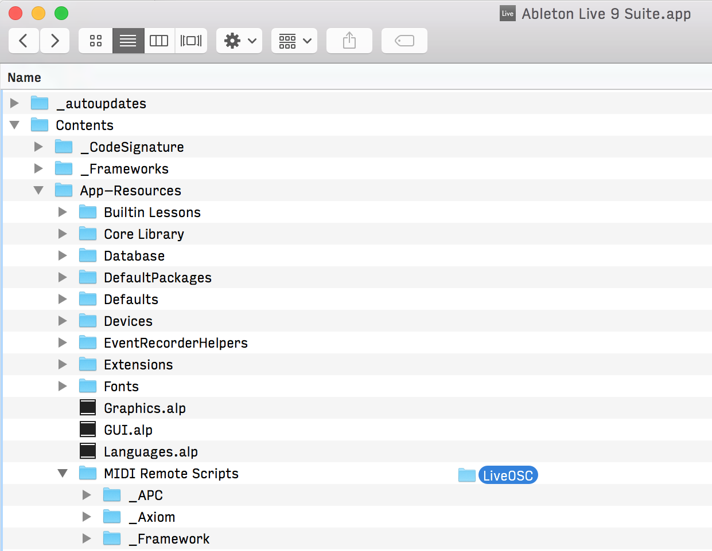

Configuring Ableton Live for use with SceneLauncher
The SceneLauncher iPhone application and Ableton Live communicate using the OSC protocol. However, Live doesn't have OSC support out of the box, and we have to install LiveOSC first. (Note: these instructions apply for OS X only.)
-
Download and install Ableton Live 9
-
Download LiveOSC and unzip the archive.
-
Open Finder and go to /Applications
-
Right-Click on Ableton Live and select Show Package Contents

-
Navigate to Contents/App-Resources/MIDI Remote Scripts
-
Drag the LiveOSC folder under MIDI Remote Scripts

- Quit Ableton Live if it is running
- Open Ableton Live and go to Preferences → MIDI Sync
-
Select LiveOSC from the control surface list

After these steps, your Ableton Live should be ready for use with SceneLauncher.
Next, start SceneLauncher on your iPhone, connect it with your computer and start playing!.